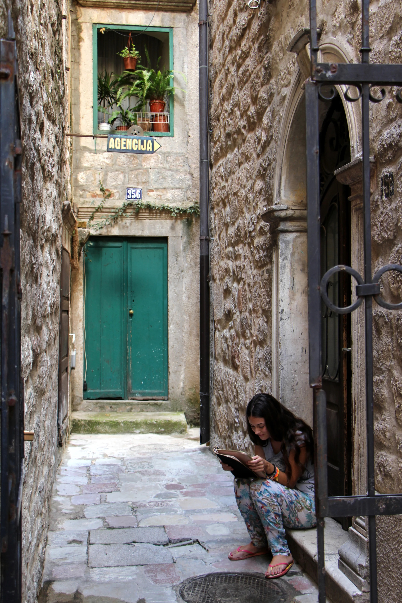
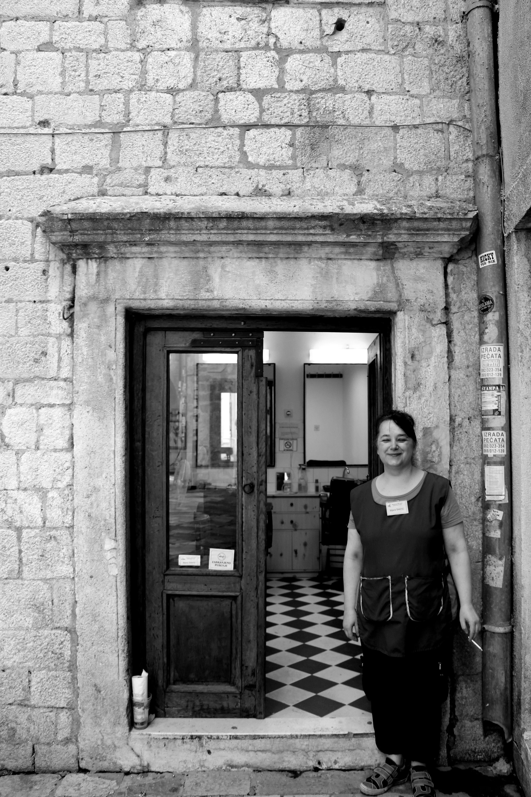
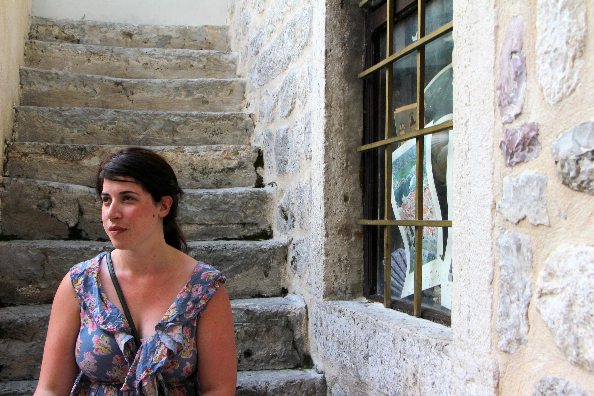
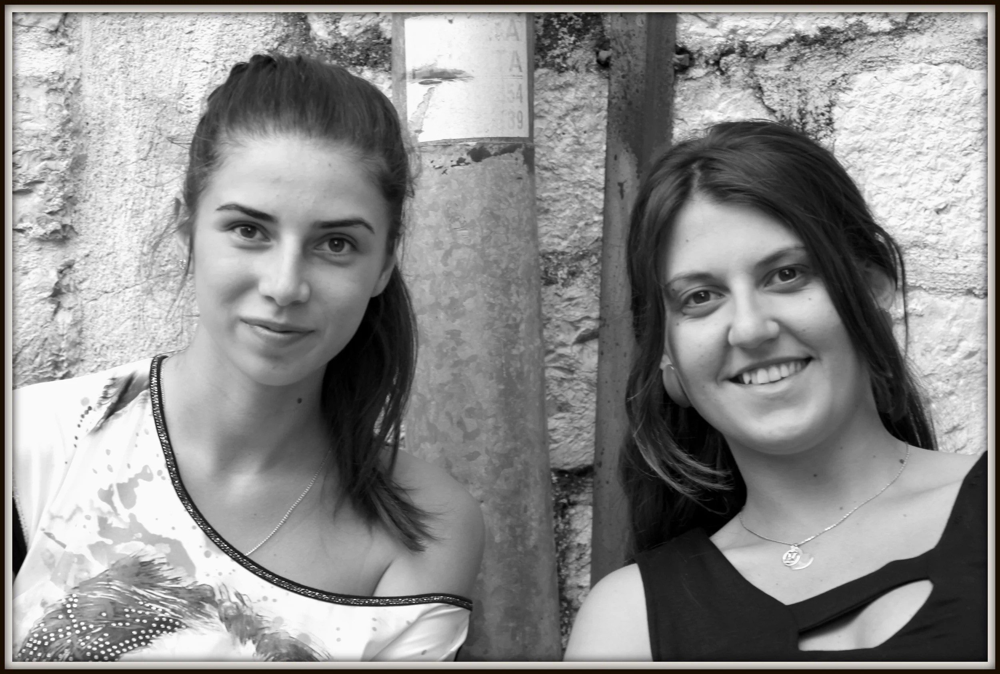
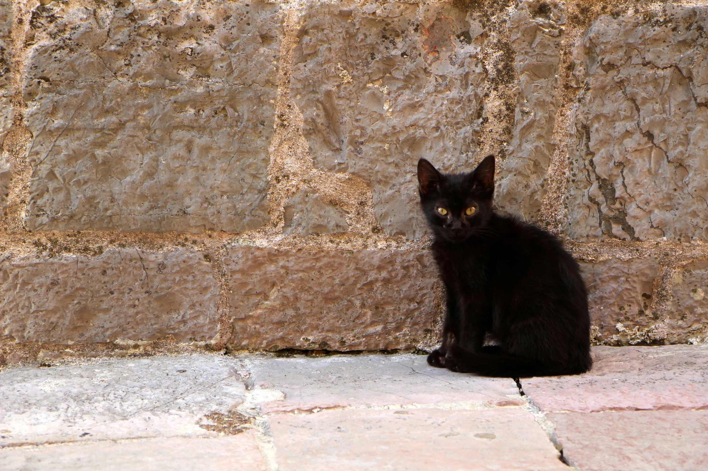
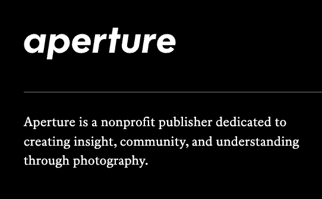

One of life’s greatest gifts to me: travel. I have had the opportunity for a lot of travel, especially when studying during university as an International Studies major and studying abroad. Since college, I have also had the opportunity to call many places home. I find I’m less intentional with photography when living in a place for longer periods of time, and getting caught in day-to-day life. This site is serving as my accountability to comb through my images from years ago, and to see if there is any photography worth keeping from my time spent living or traveling in:
| Places I've Called Home | Trips/Locations for Future Images |
|---|---|
| Los Angeles (2005-2009) | College: Panama, Peru, Thailand, East Africa (2005-2009) |
| Buenos Aires (2006-2007) | Madeira, Portuagal (2019) |
| Seoul (2011-2013) | Hawaii, Alaska, and various national parks (January 2020-2025) |
| Paris (2014-2015) | |
| New York City (2015-present) |
I have also had a season that I love— a decade that is more focused on my work in New York City. I regret not seeing this city as a location in and of itself, to shoot more intentionally. This is also serving as my accountability to take more photo walks in the city I love and call home.
As far as subject matter, I have a love of both the urban and the natural. But some of my favorite images have been from a photowalk while in Kotor, Montenegro, when I decided to spend an hour taking portraits of women, after mustering up the bravery to ask their permission. I will always remember how delighted the women were to have their photos taken, and I am encouraged to take more intentional portraits after revisiting these images and remembering this day.
 |
 |
|
 |
 |
 |
Click below for more information on one of my favorite photography resources in the city.
